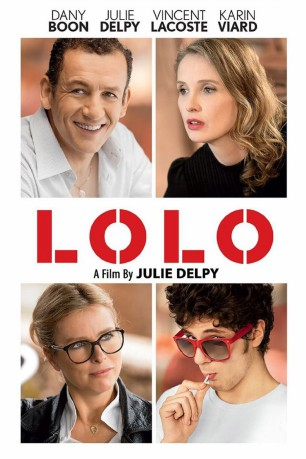

#6403 Lolo - Drei ist einer zu viel
 
 IMDB-Wertung: 5.7 / 10
IMDB-Wertung: 5.7 / 10  Metascore: 0
Metascore: 0 
Während eines Urlaubs mit ein paar Freundinnen in Südfrankreich verliebt sich Violette Hals über Kopf in den charmanten Informatiker Jean-René, der eigentlich überhaupt nicht zu ihr zu passen scheint. Trotz aller Gegensätze läuft es bei mehreren Treffen mit ihm aber sogar so gut, dass er schon wenig später mit in Violettes Pariser Wohnung zieht. Doch dort erwartet sie bereits ihr 19-jähriger Sohn Lolo, der sich so gar nicht mit dem neuen Mann im Leben seiner Mutter anfreunden will. Fortan setzt der aufgeweckte Teenager alles daran, Jean-René mit allerlei durchtriebenen Einfällen in ein schlechtes Licht zu rücken. Obwohl er damit zunehmend Erfolg hat und so in seiner Mutter Zweifel an der Beziehung sät, gibt sein Gegenüber im Kampf um Violette jedoch so schnell nicht auf.
Jahr: 2015
Dauer: 96 Minuten
FSK: 6
Land: Frankreich Studio: NFP Marketing & DistributionTonspuren: DD5.1 - ,
Untertitel:
Auflösung: 1080p (1920x808) Größe: 3717 MB
Genre: Komödie
Regisseur:  Julie Delpy
Julie Delpy
Drehbuch: Julie Delpy
Soundtrack:
Darsteller:
 Julie Delpy als Violette
Julie Delpy als Violette Dany Boon als Jean-René Graves
Dany Boon als Jean-René Graves Vincent Lacoste als Eloi dit Lolo
Vincent Lacoste als Eloi dit Lolo Karin Viard als Ariane
Karin Viard als Ariane Xavier Alcan als Xavier
Xavier Alcan als Xavier- Karl Lagerfeld als Karl Lagerfeld
- Frédéric Beigbeder als Le cuisinier
 Ramzy Bedia als L'homme à l'Aston Martin
Ramzy Bedia als L'homme à l'Aston Martin Georges Corraface als Sakis
Georges Corraface als Sakis- Kate Sasia als
- Albert Delpy als Visiteur Centre Pompidou , uncredited
- Antoine Lounguine als Lulu
- Christophe Vandevelde als Gérard
- Elise Larnicol als Élisabeth
- Christophe Canard als Patrick
 Nicolas Wanczycki als Médecin hôpital
Nicolas Wanczycki als Médecin hôpital- Rudy Milstein als Paco
- Didier Duverger als Dutertre
- Fabienne Galula als Solange
- Juliette Lamet als Annabelle
- René-Alban Fleury als Présentateur film Crédit Rural
- Alexandra Oppo als Mannequin slovaque 1
- Jessica Cressy als Mannequin slovaque 2
- Hea Deville als Mannequin Bastille
- Katell Le Bourhis als Katell
- China Moses als Pat, la maquilleuse Kabuki
- Pierre Thoretton als Journaliste galerie
- Dominique Charmet als La voisine du train
- Hélène Delpy als Journaliste hôpital
- Nicolas Ronchi als Journaliste hôpital
- Alan Corno als Policier
- Pierre-Yves Gayraud als Officier de la brigade financière
- Zoé Marchal als Sabine
- Bertrand Burgalat als Docteur Guillaume
- Michael Darmon als Journaliste iTélé
- Chayma Surhan als
 Yvonne Gradelet als Invitée soirée caritative , uncredited
Yvonne Gradelet als Invitée soirée caritative , uncredited
Datei: X:\2015(G-M)\Lolo - Drei ist einer zu viel (2015, FSK6, 1920x808).mkv seit 20.06.2017
Festplatte: HD 2015(A-Z)
 Es gibt insgesamt 129 Filme in der Gruppe '2015(G-M)'
Es gibt insgesamt 129 Filme in der Gruppe '2015(G-M)'